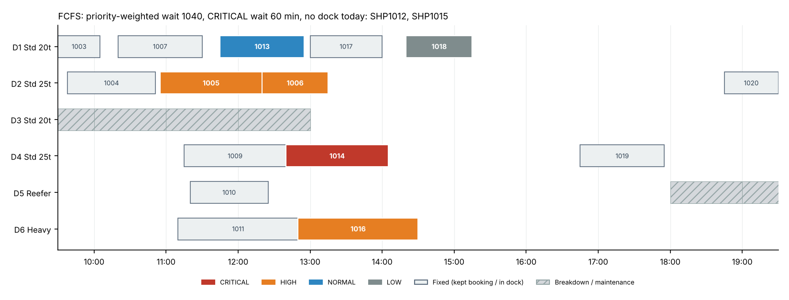
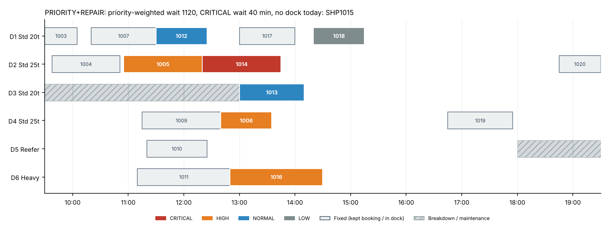

FDE ACADEMY | MINI PROJECT 2 | SETUHAUL LOGISTICS
Deliverable 4
Scenario Run
The morning of 4 August 2026 at Jaipur DC, replayed through the working prototype: 13 driver conversations, 1 coordinator case, and the facility scheduling tool
Every message, tool call and reply below was produced by the code in deliverable 3, running on a copy of the supplied database. The transcripts are generated from the run's output file, not typed by hand. 10 of 13 driver cases ended without a person; the 3 that reached a person were the ones the brief says must (safety, no feasible slot, a data conflict needing approval). No slot was ever allocated twice.
Client: SetuHaul Logistics Pvt. Ltd. (FDE Academy challenge)
Snapshot: 4 August 2026, Jaipur DC and Gurugram Cross-Dock (Asia/Kolkata)
Version: 1.1 | 18 November 2026 (scheduling engine updated to an exact, proven-optimal search; see the v2 change log)
Audience: FDE Academy reviewers; SetuHaul head of operations and warehouse planner
Contents
1. How the run works
2. Results against the brief's measures
3. Coverage of the brief's ladder of situations
4. The morning at a glance
5. The conversations
C01. Early truck asks for a dock now
C02. Dock D3 breaks down; the truck in the yard is re-planned (coordinator case)
C03. "Late by one hour"; loses a race; re-booked in one message
C04. Late truck in the yard behind an overrunning unload
C05. Tyre repaired; must leave by 1:30 for another pickup
C06. Two trips: which one? The evening slot needs approval
C07. "Any slot after 12?"; a retried message; wins the race
C08. Heavy trailer: only one door fits
C09. A vague delay in Hinglish
C10. CRITICAL load claims urgency; swap search
C11. Only asking about options
C12. Safety: accident reported
C13. Shipment cancelled while the driver is on the way
C14. Reefer load: no feasible slot today
6. The scheduling tool: competing trucks at 09:45
7. What the run taught us
The snapshot is not one moment: its rows run from 07:10 to 16:30 (audit F15). A query "at 09:45" that can see a 16:25 ETA is answering the wrong question. So the run:
Rewinds a copy of the snapshot to 08:20. Bookings made later are removed, and bookings cancelled later are restored. One exception is logged: APT1012A stays cancelled, because restoring it would double-book SLOT-JAI-003 with APT1007 (audit F08).
Replays the day. Each seed row (ETA updates, gate-ins, dock events, the cancellation) is applied at its own time. Driver messages come from the seed chat threads, with their seed IDs, plus a few new ones that the brief's ladder asks for (Hinglish, Hindi, safety, a vague delay).
Runs the real code. Each message goes through workflow.handle(). Every booking goes through the capacity layer's transaction.
Stages a true race. At 09:36 two drivers pick the same slot in the same instant, on two threads with two database connections.
Measures. After the run, the runner computes the brief's measures and four invariants directly from the database.
Run it yourself with python3 -I run_scenarios.py out/ (under one second). Running it twice gives identical output.
IN PLAIN WORDS | Why replay instead of a live demo A cricket replay lets the umpire watch the same ball again and again and get the same answer. A replay of the morning does the same for the agent: anyone can re-run it, see exactly what each driver was told, and check it against the data. |
| Measure | Result in this run | How we measured it |
|---|---|---|
| Time from first message to usable outcome | Median 1 minute; 11 of 13 cases within 2 minutes. C06 took 10 minutes (waiting for a coordinator's approval). C03 took 18 minutes, 17 of them before the driver picked an option. | Scenario clock: first driver message to BOOKED, confirmed status, CLOSED or ESCALATED |
| Turns per case | Median 2 driver messages (range 1-3) | Count of the driver's messages per case |
| Share resolved without manual takeover | 10 of 13 (77%). The 3 with a person: C06 (approval: the vehicle shows on another trip), C12 (safety), C14 (no feasible slot). All three are on the brief's "a person approves or takes over" list. | Cases with any escalation or coordinator action |
| Conflicting or duplicate allocations | 0. Slots with two active bookings: 0. Shipments with two current bookings: 0. Overlapping bookings on one door: 0. Bookings breaking compatibility: 0. | Four SQL invariants run on the final database; the 50-race proof is in deliverable 5 |
| Options later found infeasible | 1 of 8 picks (C03: taken in the race). Caught by the re-check at commit; the driver got fresh options in the same reply and booked one minute later. | Every pick re-checked inside the commit transaction |
| No-slot escalations handled correctly | 1 of 1 complete (ESC-0004). It holds the driver's words, the ETA, the current booking, every door tried with its reason, computed recommendations, the person, the channel and a deadline. The failed night-shift address (OM004) was not used. | Field check of the hand-off record |
| Average driver waiting after rescheduling | 34.2 minutes across the 6 trucks re-booked by chat (range 15-55) | Planned gate arrival (or the driver's own "after 12") to planned dock start. These are planned waits: the trucks' gate-ins happen after the snapshot ends. |
| Warehouse slot utilisation | 10 of 31 open slots between 10:00 and 16:00 hold a live booking | Slots, not door-minutes. The afternoon is light; the binding limits are door type (heavy, reefer) and timing, not total capacity. |
| Priority-policy violations | 0 against four checks (below) | Each decision checked against the stated policy in deliverable 2, D7 |
| Driver clarification turns | 2 questions in 13 cases (C06: which trip; C09: what time). C03's "late by one hour" was stated back, not asked. | Questions asked by the agent |
Priority-policy checks
| Rule (deliverable 2, D7) | Result |
|---|---|
| Priority comes only from the shipment record | 1 urgency claim in a message (C10); it was logged and did not change the order |
| No driver books a slot protected for a higher-priority truck | Enforced inside every commit. At 09:36 DRV013 (LOW) picked D4 12:40, earmarked for HIGH SHP1006; the commit refused it and offered fresh options |
| A confirmed booking moves only with the driver's or a coordinator's say | The only move of a live booking was SHP1005, approved by the coordinator at 09:17. APT1018 was released at 09:45 because its truck could no longer reach the window (policy D20), and its dispatcher was told. |
| A swap never breaks a driver's limit | 3 swap searches, 0 swaps made. One candidate was refused because it would have broken SHP1012's 13:30 gate-out. |
| Level | Situation | Where the brief points | Shown in | What it proves |
|---|---|---|---|---|
| 1 | A driver only asks about options | THR011, SHP1017 | C11 | Options are read-only; nothing is recorded or held; "no thanks" keeps the current plan |
| 2 | The message misses key facts | THR003, SHP1013, THR010, DRV004 | C03, C06, C09 | Ask only when the answer changes the booking; otherwise state the assumption back |
| 3 | Rules and compatibility narrow the choices | SHP1010, SHP1015, SHP1016, RULE005 | C08 (heavy door only), C09 (reefer still fits), C06 (evening start needs approval), C14 | Feasibility is a 15-point check, not "an empty row" |
| 4 | Several delayed trucks chase nearby slots | SHP1006, SHP1012, SHP1013, SHP1014, SHP1009 | C03, C05, C07, C10, the 09:36 race, section 6 | First valid commit wins; scarce slots are protected; swaps never break a limit; the policy is tested |
| 5 | The world changes mid-conversation | SHP1005, APT1008, THR001, THR009, SHP1002 | C02 (breakdown), C03 (option taken), C04 (overrun), C07 (retried message), C13 (cancellation) | Re-check at commit; dedupe; health monitor; cancellations free capacity at once |
| 6 | No feasible slot exists | SHP1015, THR005, OM004 | C14, plus the 09:16 early warning | Escalate with a complete record; never invent a slot; never use the failed channel |
| + | An early truck, a late truck and work in progress share one facility | SHP1002, SHP1003, SHP1004, SHP1006 | C01, C04, C07, section 6 | Trucks in a dock are fixed; the early truck uses a free door without delaying anyone |
APT1008 (cancelled by the customer at 08:20) is treated as history from the start: its D2 10:00 slot counts as free capacity from that moment.
The run also covers a case outside the ladder: C12, a safety report. The brief puts driver safety on the "a person takes over" list.
Events from the seed data are replayed at their own time. A few follow from bookings our system made (for example, SHP1003 docking at D4 after C01 moved it there).
| Time | Event | Source |
|---|---|---|
| 08:20 | World rewound to 08:20; later rows are replayed at their own time | Our system |
| 08:30 | ETA update from carrier: SHP1004 now 09:20 (seed ETA003) | Seed data, replayed |
| 08:35 | SHP1003 docks at D4 (its new early booking) | Simulated: follows a booking we made |
| 08:42 | SHP1001 finishes at D1; gate-out 08:50 (seed CHK1001) | Seed data, replayed |
| 08:50 | ETA update: SHP1006 now 10:50, medium confidence (seed ETA005) | Seed data, replayed |
| 09:05 | SHP1005 gates in for its 09:00 D3 slot (seed CHK1005) | Seed data, replayed |
| 09:15 | Dock D3 hydraulic leveller breaks down until 13:00 (seed DEVT001, logged 09:16) | Seed data, replayed |
| 09:16 | Booking health monitor (event-driven re-check after the D3 breakdown) | Our system |
| 09:16 | Proactive alert to coordinator: the reefer booking APT1015A (17:00) cannot work | Our system |
| 09:16 | Scheduling tool proposal after the dock event (proposes only) | Our system |
| 09:17 | Coordinator approves the move for SHP1005 (in the yard; D3 broken; 20.5 t also exceeds D3's 20 t limit) | Our system |
| 09:20 | SHP1003 finishes unloading; gate-out 8 minutes later | Simulated: follows a booking we made |
| 09:25 | SHP1004 gates in, 25 minutes into its 09:00 D2 slot (seed CHK1004) | Seed data, replayed |
| 09:28 | SHP1002 finally finishes at D2 (ran 10 minutes past its 70-minute unload) | Seed data, replayed |
| 09:35 | SHP1005 docks at D4 | Simulated: follows a booking we made |
| 09:38 | Yard team calls SHP1004 to D2 | Simulated: follows a booking we made |
| 09:41 | Coordinator approves HLD-0001 for SHP1020; the approval is re-checked before booking | Our system |
| 09:55 | SHP1017's driver phones dispatch: arrival between 12:30 and 13:00 (seed ETA012, low confidence) | Seed data, replayed |
| 09:56 | Booking health monitor: SHP1017's 12:00 booking is at risk, so a proactive WhatsApp check-in goes out | Our system |
| 10:10 | Dispatch cancels SHP1019; its 16:00 D4 booking returns to the pool | Seed data, replayed |
| 12:20 | SHP1015 (reefer, from Delhi) departs 20 minutes late (seed actual departure) | Seed data, replayed |
Each table shows the driver's message, the tools the workflow called (the audit trail), and the reply exactly as sent. Hindi and Hinglish messages have an English gloss in brackets; the gloss is ours, for reviewers, and is not sent.
DRV003 Mukesh Yadav, shipment SHP1003. Ladder: + early truck.
| Time | From | Message or action |
|---|---|---|
| 08:22 | Driver (English) | "I am already at the gate. Can I get a dock now instead of waiting for 9?" |
| Tools | read_message:EARLY_ARRIVAL, resolve_shipment:SHP1003 (the truck at our gate), check_slot_feasibility:2 earlier options (no displacement) | |
| Agent | Welcome - you're early. Dock D4 is free now: I can move you from
9:00 AM to 8:35 AM, and it does not delay any other booking. 1) Take Dock D4 at 8:35 AM 2) Keep my 9:00 AM slot |
|
| 08:23 | Driver (English) | "1" |
| Tools | read_message:CHOOSE, book:CONFIRMED APT-N0001 | |
| Agent | Booked: Dock D4 at Jaipur DC, start 8:35 AM. You're already checked in; the yard team will call you to Dock D4. Booking ref APT-N0001. |
End state: BOOKED.
Coordinator and planner. Ladder: 5 world changes.
| Time | From | Message or action |
|---|---|---|
| 09:16 | System | Booking health monitor (event-driven re-check after the D3
breakdown) APT1005 SHP1005 D3 09:00: INVALID; APT1016A SHP1016 D6 09:30: CERTAIN_MISS; APT1006 SHP1006 D4 10:00: CERTAIN_MISS; APT1017 SHP1017 D1 12:00: AT_RISK; APT1018 SHP1018 D2 12:00: CERTAIN_MISS; APT1015A SHP1015 D5 17:00: INVALID |
| 09:16 | System | Scheduling tool proposal after the dock event (proposes
only) Proposed: SHP1014 D2 10:45, SHP1016 D6 12:50, SHP1015 none, SHP1005 D4 09:35, SHP1006 D1 11:30, SHP1012 D2 12:10, SHP1013 D4 12:40, SHP1018 D2 13:55. Score: unscheduled weight 3, weighted wait 990, changes 4 |
| 09:17 | System | Coordinator approves the move for SHP1005 (in the yard; D3
broken; 20.5 t also exceeds D3's 20 t limit) result: CONFIRMED, appointment: APT-N0002, dock: D4, start: 09:35, released: [] |
DRV013 Kailash Gurjar, shipment SHP1013. Ladder: 2 missing facts, 4 competing trucks, 5 world changes.
| Time | From | Message or action |
|---|---|---|
| 09:19 | Driver (English) | "I am late by one hour." |
| Tools | read_message:REPORT_DELAY, resolve_shipment:SHP1013, record_eta:11:00 MEDIUM, scheduling_tool:replan+earmarks, check_slot_feasibility:3 options | |
| Agent | I've noted your arrival as about 11:00 AM (planned 10:00 AM + 60
min). If that's wrong, just send the time. Slots your truck can make at Jaipur DC (nothing is booked until you choose): 1) Dock D2 - start 11:30 AM, unloading done by about 12:30 PM 2) Dock D2 - start 12:00 PM, unloading done by about 1:00 PM 3) Dock D4 - start 12:40 PM, unloading done by about 1:40 PM Reply 1, 2 or 3 to book. |
|
| 09:36 | System | Race: both drivers choose the same slot at the same instant
(two threads, two database connections) Slot SLOT-JAI-047: DRV013 picks option 3 (shown 09:19), DRV006 picks option 1 (shown 09:34). The 09:34 re-plan earmarked this slot for HIGH SHP1006, so DRV013's commit is refused whichever thread is first. |
| 09:36 | Driver (English) | "3" |
| Tools | read_message:CHOOSE, book:OPTION_GONE (PROTECTED_FOR_PRIORITY_LOAD) | |
| Agent | Sorry, Dock D4 at 12:40 PM is now reserved for a higher-priority
load. Nothing was booked for you yet. Fresh options: 1) Dock D1 - start 11:30 AM, unloading done by about 12:30 PM 2) Dock D2 - start 1:00 PM, unloading done by about 2:00 PM 3) Dock D1 - start 2:00 PM, unloading done by about 3:00 PM Reply 1, 2 or 3 to book. |
|
| 09:37 | Driver (English) | "1" |
| Tools | read_message:CHOOSE, book:CONFIRMED APT-N0005 | |
| Agent | Booked: Dock D1 at Jaipur DC, start 11:30 AM. Please be at the gate by 11:15 AM. Booking ref APT-N0005. |
End state: BOOKED.
DRV004 Sandeep Meena, shipment SHP1004. Ladder: + work in progress, 5 world changes.
| Time | From | Message or action |
|---|---|---|
| 09:27 | Driver (English) | "I reached late and am in the yard. Has a new dock been assigned?" |
| Tools | read_message:AT_YARD_STATUS, resolve_shipment:SHP1004 (the truck at our gate), get_booking_status:OK | |
| Agent | Your 9:00 AM booking on Dock D2 is still valid: you checked in at 9:25 AM, inside the 30-minute grace. Dock D2 is running late because the truck before you is still unloading. Expected call to dock: about 9:50 AM. Queue position 2. |
End state: BOOKED.
DRV012 Arjun Das, shipment SHP1012. Ladder: 4 competing trucks.
| Time | From | Message or action |
|---|---|---|
| 09:29 | Driver (English) | "Tyre repaired. I can reach 11:10. I need to leave the warehouse before 1:30 for another pickup." |
| Tools | read_message:REPORT_DELAY, resolve_shipment:SHP1012, record_eta:11:10 HIGH, scheduling_tool:replan+earmarks, check_slot_feasibility:2 options | |
| Agent | Slots your truck can make at Jaipur DC (nothing is booked until you
choose): 1) Dock D2 - start 11:25 AM, unloading done by about 12:10 PM 2) Dock D2 - start 12:00 PM, unloading done by about 12:45 PM Reply 1 or 2 to book. |
|
| 09:30 | Driver (English) | "1" |
| Tools | read_message:CHOOSE, book:CONFIRMED APT-N0003 | |
| Agent | Booked: Dock D2 at Jaipur DC, start 11:25 AM. Please be at the gate by 11:10 AM. Booking ref APT-N0003. |
End state: BOOKED.
DRV004 Sandeep Meena, shipment SHP1004. Ladder: 2 missing facts, 3 rules narrow choices.
| Time | From | Message or action |
|---|---|---|
| 09:31 | Driver (English) | "I will be late by 45 minutes." |
| Tools | read_message:REPORT_DELAY, ask:WHICH_SHIPMENT | |
| Agent | You have 2 trips today. Which one is this about? 1) ORD-260804-004 - Kota load, due 8:45 AM - at our gate now 2) ORD-260804-020 - Kota load, due 6:00 PM (Your other truck is already at our gate, so I think you mean ORD-260804-020.) |
|
| 09:32 | Driver (Hindi) | "शाम वाला" [the evening one] |
| Tools | read_message:ANSWER, resolve_shipment:SHP1020 (your answer), record_eta:18:45 MEDIUM, scheduling_tool:replan+earmarks, check_current_booking:AT_RISK, check_slot_feasibility:3 options | |
| Agent | आपके पहुँचने का समय लगभग 6:45 PM माना है (आपका 6:00 PM स्लॉट + 45 मिनट)।
गलत हो तो समय भेज दीजिए। Jaipur DC में ये स्लॉट आपके ट्रक के लिए हैं (आपके चुनने पर ही बुक होगा): 1) डॉक D1 - 7:30 PM से शुरू, लगभग 8:30 PM तक खाली (कोऑर्डिनेटर की मंज़ूरी चाहिए) 2) डॉक D1 - 8:00 PM से शुरू, लगभग 9:00 PM तक खाली (कोऑर्डिनेटर की मंज़ूरी चाहिए) 3) डॉक D1 - 9:00 PM से शुरू, लगभग 10:00 PM तक खाली (कोऑर्डिनेटर की मंज़ूरी चाहिए) बुक करने के लिए 1, 2 या 3 भेजिए। [I've taken your arrival as about 6:45 PM (your 6:00 PM slot + 45 min). If that's wrong, send the time. These slots at Jaipur DC fit your truck (booked only when you choose): 1) Dock D1 from 7:30 PM, done by about 8:30 PM (needs coordinator approval) 2) Dock D1 from 8:00 PM (needs approval) 3) Dock D1 from 9:00 PM (needs approval). Send 1, 2 or 3 to book.] |
|
| 09:33 | Driver (Hindi) | "1" |
| Tools | read_message:CHOOSE, hold_for_approval:HLD-0001 | |
| Agent | डॉक D1, 7:30 PM के लिए कोऑर्डिनेटर से मंज़ूरी माँगी है (रिकॉर्ड में यह ट्रक दूसरी
ट्रिप पर दिख रहा है)। अभी पक्का नहीं है। 9:48 AM तक जवाब मिलेगा। [I've asked the coordinator to approve Dock D1 at 7:30 PM (the records show this truck on another trip). It is not confirmed yet. You'll hear by 9:48 AM.] |
|
| 09:41 | System | Coordinator approves HLD-0001 for SHP1020; the approval is
re-checked before booking result: CONFIRMED, appointment: APT-N0007 |
| 09:41 | Agent (follow-up) | पक्का हो गया: कोऑर्डिनेटर ने Jaipur DC, डॉक D1, 7:30 PM मंज़ूर कर दिया। गेट
पर 7:15 PM तक पहुँचिए। रेफ़ APT-N0007। [Confirmed: the coordinator approved Jaipur DC, Dock D1, 7:30 PM. Please reach the gate by 7:15 PM. Ref APT-N0007.] |
End state: BOOKED.
DRV006 Manoj Sharma, shipment SHP1006. Ladder: 4 competing trucks, 5 world changes.
| Time | From | Message or action |
|---|---|---|
| 09:34 | Driver (English) | "Traffic after Shahpura. Reaching around 11:20. Any slot after 12?" |
| Tools | read_message:REPORT_DELAY, resolve_shipment:SHP1006 (the trip you are driving now), record_eta:11:20 MEDIUM, scheduling_tool:replan+earmarks, check_current_booking:CERTAIN_MISS, check_slot_feasibility:3 options | |
| Agent | Slots your truck can make at Jaipur DC (nothing is booked until you
choose): 1) Dock D4 - start 12:40 PM, unloading done by about 1:25 PM 2) Dock D2 - start 1:00 PM, unloading done by about 1:45 PM 3) Dock D1 - start 2:00 PM, unloading done by about 2:45 PM Reply 1, 2 or 3 to book. |
|
| 09:35 | Driver (English) | "Traffic after Shahpura. Reaching around 11:20. Any slot after 12?" |
| Tools | dedupe:SUPPRESSED (same as wa-9001) | |
| Agent | (no reply: duplicate suppressed) | |
| 09:36 | System | Race: both drivers choose the same slot at the same instant
(two threads, two database connections) Slot SLOT-JAI-047: DRV013 picks option 3 (shown 09:19), DRV006 picks option 1 (shown 09:34). The 09:34 re-plan earmarked this slot for HIGH SHP1006, so DRV013's commit is refused whichever thread is first. |
| 09:36 | Driver (English) | "1" |
| Tools | read_message:CHOOSE, book:CONFIRMED APT-N0004, scheduling_tool:swap_search -> no admissible swap (SHP1007: HIGH_CANNOT_TAKE_SLOT; SHP1012: HIGH_CANNOT_TAKE_SLOT; SHP1011: HIGH_CANNOT_TAKE_SLOT) | |
| Agent | Booked: Dock D4 at Jaipur DC, start 12:40 PM. Please be at the gate by 12:25 PM. Booking ref APT-N0004. |
End state: BOOKED.
DRV007 Nitin Patil, shipment SHP1016. Ladder: 3 rules narrow choices.
| Time | From | Message or action |
|---|---|---|
| 09:39 | Driver (English) | "Heavy trailer ETA 12:00. Original heavy-bay slot will be missed. What is next?" |
| Tools | read_message:REPORT_DELAY, resolve_shipment:SHP1016 (your heavy load), escalate:DATA_CONFLICT (non-blocking), record_eta:12:00 HIGH, scheduling_tool:replan+earmarks, check_current_booking:CERTAIN_MISS, check_slot_feasibility:3 options | |
| Agent | Slots your truck can make at Jaipur DC (nothing is booked until you
choose): 1) Dock D6 - start 12:50 PM, unloading done by about 2:20 PM 2) Dock D6 - start 2:00 PM, unloading done by about 3:30 PM 3) Dock D6 - start 3:30 PM, unloading done by about 5:00 PM Reply 1, 2 or 3 to book. |
|
| 09:40 | Driver (English) | "1" |
| Tools | read_message:CHOOSE, book:CONFIRMED APT-N0006, scheduling_tool:swap_search -> no admissible swap (SHP1007: HIGH_CANNOT_TAKE_SLOT; SHP1012: HIGH_CANNOT_TAKE_SLOT; SHP1013: HIGH_CANNOT_TAKE_SLOT) | |
| Agent | Booked: Dock D6 at Jaipur DC, start 12:50 PM. Please be at the gate by 12:35 PM. Booking ref APT-N0006. |
End state: BOOKED.
DRV010 Deepak Saini, shipment SHP1010. Ladder: 2 missing facts, 3 rules narrow choices.
| Time | From | Message or action |
|---|---|---|
| 09:42 | Driver (Hinglish) | "thoda late hoon bhai, traffic hai" [running a bit late, brother, there's traffic] |
| Tools | read_message:REPORT_DELAY, resolve_shipment:SHP1010, ask:ETA | |
| Agent | Batane ke liye shukriya. Jaipur DC kitne baje tak pahunchoge? Jaise
11:30 likhiye, taaki sahi slot mil sake. [Thanks for telling us. By what time will you reach Jaipur DC? Write a time like 11:30 so we can find the right slot.] |
|
| 09:43 | Driver (Hinglish) | "11:30 tak pahunch jaunga" [I'll reach by 11:30] |
| Tools | read_message:REPORT_DELAY, record_eta:11:30 HIGH, scheduling_tool:replan+earmarks, check_current_booking:STILL_FEASIBLE | |
| Agent | Shukriya. Lagbhag 11:30 AM pahunchne par bhi aapki booking (Dock D5,
11:45 AM se) chalegi. Kuch badalne ki zarurat nahi. [Thanks. Even arriving about 11:30 AM, your booking (Dock D5, from 11:45 AM) still works. Nothing needs to change.] |
End state: BOOKED.
DRV014 Pradeep Jat, shipment SHP1014. Ladder: 4 competing trucks.
| Time | From | Message or action |
|---|---|---|
| 09:44 | Driver (English) | "Origin released me late. ETA 11:25. This load is urgent. Can I get the first possible dock?" |
| Tools | read_message:REPORT_DELAY, resolve_shipment:SHP1014, record_eta:11:25 HIGH, scheduling_tool:replan+earmarks, check_slot_feasibility:3 options, policy:urgency_claim_ignored | |
| Agent | Dock order follows the priority on the shipment record, not the
message, so I can't move you ahead for urgency. These are the earliest
slots that fit. Slots your truck can make at Jaipur DC (nothing is booked until you choose): 1) Dock D2 - start 12:20 PM, unloading done by about 1:35 PM 2) Dock D2 - start 1:00 PM, unloading done by about 2:15 PM 3) Dock D4 - start 1:35 PM, unloading done by about 2:50 PM Reply 1, 2 or 3 to book. |
|
| 09:45 | Driver (English) | "1" |
| Tools | read_message:CHOOSE, book:CONFIRMED APT-N0008 (released APT1018), scheduling_tool:swap_search -> no admissible swap (SHP1007: HIGH_CANNOT_TAKE_SLOT; SHP1012: SHP1012 has no other slot that keeps its limits (latest gate out 13:30); SHP1013: HIGH_CANNOT_TAKE_SLOT; SHP1010: HIGH_CANNOT_TAKE_SLOT; SHP1011: HIGH_CANNOT_TAKE_SLOT) | |
| Agent | Booked: Dock D2 at Jaipur DC, start 12:20 PM. Please be at the gate by 12:05 PM. Booking ref APT-N0008. |
End state: BOOKED.
DRV001 Rajesh Kumar, shipment SHP1017. Ladder: 1 asking, not booking.
| Time | From | Message or action |
|---|---|---|
| 09:56 | System | Booking health monitor: SHP1017's 12:00 booking is at risk,
so a proactive WhatsApp check-in goes out WhatsApp utility template sent: "Hi Rajesh, checking on ORD-260804-017 to Jaipur DC: your slot starts 12:00 PM. Are you on track? 1) On time 2) Running late 3) Need help" |
| 10:02 | Driver (English) | "What slots are possible after 1 PM if I reach around 12:45?" |
| Tools | read_message:ASK_OPTIONS, resolve_shipment:SHP1017, check_slot_feasibility:3 options (read-only, nothing recorded) | |
| Agent | Just options for now; nothing is booked or held. If you reach about
12:45 PM, these slots at Jaipur DC would work: 1) Dock D1 - start 1:15 PM, unloading done by about 2:05 PM 2) Dock D4 - start 1:35 PM, unloading done by about 2:25 PM 3) Dock D1 - start 2:00 PM, unloading done by about 2:50 PM Reply 1, 2 or 3 if you want one booked. |
|
| 10:03 | Driver (English) | "what about after 3 PM?" |
| Tools | read_message:ASK_OPTIONS, resolve_shipment:SHP1017, check_slot_feasibility:3 options (read-only, nothing recorded) | |
| Agent | Just options for now; nothing is booked or held. If you reach about
12:45 PM, these slots at Jaipur DC would work: 1) Dock D1 - start 3:00 PM, unloading done by about 3:50 PM 2) Dock D1 - start 4:00 PM, unloading done by about 4:50 PM 3) Dock D1 - start 5:00 PM, unloading done by about 5:50 PM Reply 1, 2 or 3 if you want one booked. |
|
| 10:04 | Driver (English) | "ok no thanks, I will keep my slot" |
| Tools | read_message:DECLINE, decline:NOTHING_HELD | |
| Agent | No problem - nothing has been booked or held. Your current plan stays as it is. |
End state: BOOKED.
DRV011 Ramesh Choudhary, shipment none. Ladder: Boundary: a person takes over.
| Time | From | Message or action |
|---|---|---|
| 10:05 | Driver (Hinglish) | "bhai accident ho gaya, helper ko chot lagi hai, truck side mein
laga diya" [brother, there's been an accident, my helper is hurt, I've pulled the truck to the side] |
| Tools | read_message:SAFETY, escalate:SAFETY ESC-0003 -> Anita Joshi via PHONE_CALL+WHATSAPP | |
| Agent | Sabse pehle sabki suraksha dekhiye. Koi ghayal ho to abhi 112 par
call kijiye. Shift manager Anita Joshi ko bata diya hai, woh 5 minute
mein call karenge. Dock slot ki chinta mat kijiye. [First make sure everyone is safe. If anyone is injured, call 112 now. I've told shift manager Anita Joshi; she will call you within 5 minutes. Don't worry about the dock slot.] |
End state: ESCALATED.
DRV008 Ashok Prajapat, shipment SHP1019. Ladder: 5 world changes.
| Time | From | Message or action |
|---|---|---|
| 10:12 | Driver (English) | "Is my 4 PM slot still active?" |
| Tools | read_message:CHECK_STATUS, resolve_shipment:SHP1019, get_booking_status:SHIPMENT_CANCELLED | |
| Agent | Shipment ORD-260804-019 and its appointment were cancelled by dispatch at 10:10 AM. Please don't travel to Jaipur DC; call your dispatcher on +91-22-4104004. |
End state: CLOSED.
DRV015 Mohammed Salim, shipment SHP1015. Ladder: 6 no feasible slot.
| Time | From | Message or action |
|---|---|---|
| 09:16 | System | Proactive alert to coordinator: the reefer booking APT1015A
(17:00) cannot work D5 maintenance from 18:00 was planned on 1 Aug at 14:00, after this booking (audit F07). Planned arrival 17:30 + 60-min unload cannot finish before 18:00. Suggested: Ask the carrier to reach Jaipur by 16:45 so unloading runs 17:00-18:00 / Ask maintenance on Dock D5 to start at 7:10 PM instead of 6:00 PM: the truck could unload 6:00 PM-7:00 PM. |
| 16:24 | Driver (English) | "Evening traffic. ETA 6:30. Can the reefer unload tonight?" |
| Tools | read_message:REPORT_DELAY, resolve_shipment:SHP1015, record_eta:18:30 HIGH, scheduling_tool:replan+earmarks, check_current_booking:CERTAIN_MISS, check_slot_feasibility:0 options, escalate:NO_FEASIBLE_SLOT ESC-0004 -> Neha Bansal via EMAIL+DASHBOARD | |
| Agent | I'm sorry - I can't find a reefer dock at Jaipur DC that your truck can reach today (Dock D5 maintenance 6:00 PM-10:00 PM; no new unloading starts after 9:00 PM without approval). I've passed your case to Neha Bansal (warehouse coordinator), who will contact you by 4:39 PM. Please don't go to the dock until they do. |
End state: ESCALATED.
The question. The brief asks what happens "when an early truck, a late truck and a truck in progress share one facility", and how scarce capacity is ranked. To compare policies fairly, the tool plans one fixed input: Jaipur at 09:45 as it stood in the client's own data, with every delay of the morning wave known and nothing re-booked by our agent.
Fixed work (the plan cannot move it): SHP1003 and SHP1004 in docks, kept bookings (SHP1007, SHP1009, SHP1010, SHP1011, SHP1017, SHP1019, SHP1020), the D3 breakdown until 13:00, and D5 maintenance from 18:00.
Trucks that need a door (8 jobs)
| Shipment | Priority | Door | Unload | Earliest dock start | Why it needs a door |
|---|---|---|---|---|---|
| SHP1005 | HIGH | Standard, 20.5 t | 75 min | 09:55 (in the yard) | Booked on D3, which broke down; also over D3's 20 t limit |
| SHP1006 | HIGH | Standard | 45 min | 11:35 (driver: "after 12") | Old slot is a certain miss |
| SHP1012 | NORMAL | Standard | 45 min | 11:25 (must leave by 13:30) | No booking |
| SHP1013 | NORMAL | Standard | 60 min | 11:45 (low confidence) | No booking |
| SHP1014 | CRITICAL | Standard, 21 t | 75 min | 11:40 | No booking |
| SHP1015 | HIGH | Reefer | 60 min | 18:00 | Booking infeasible (maintenance) |
| SHP1016 | HIGH | Heavy, 31 t | 90 min | 12:15 | Old slot is a certain miss |
| SHP1018 | LOW | Standard | 45 min | 14:20 (not yet departed) | Old slot is a certain miss |
Seven policies on the same input
| Policy | In plain words | No door today | Priority-weighted wait | Average wait | CRITICAL wait | Longest HIGH/CRITICAL wait |
|---|---|---|---|---|---|---|
| FCFS | Whoever asked first | 2 (SHP1012, SHP1015) | 1,040 | 33.3 min | 60 min | 60 min |
| EDD | Earliest appointment first | 1 (SHP1015) | 1,200 | 40.0 min | 60 min | 60 min |
| WSPT | Most priority per minute of door time first | 1 | 1,320 | 52.9 min | 0 min | 190 min |
| PRIORITY | Strict priority | 1 | 1,310 | 52.9 min | 0 min | 165 min |
| PRIORITY+REPAIR (first answer) | Priority list, then swap pairs while it improves | 1 | 1,120 | 40.0 min | 40 min | 65 min |
| EXACT (ours, engine) | Branch and bound over all orders; proven optimal after 5,425 nodes | 1 | 1,120 | 40.0 min | 40 min | 65 min |
| BEST_ORDER | Every one of the 40,320 orders tried (benchmark) | 1 | 1,120 | 40.0 min | 40 min | 65 min |
Waits are measured from the earliest dock start in the jobs table. SHP1006's figure includes the 25 minutes between its arrival and the "after 12" it asked for.
What the table says
First come, first served looks cheapest but fails a promise. It gives D1 11:45 to SHP1013 because SHP1013 asked ten minutes earlier. SHP1012 then has no door that lets it leave by 13:30, so it misses its next pickup. Its low weighted wait comes from serving fewer trucks.
Strict priority over-serves the CRITICAL load. The CRITICAL truck waits 0 minutes, but SHP1005, a HIGH load already in the yard since 09:05, waits 165 minutes, and its driver risks detention charges.
Our exact engine proves this plan optimal after 5,425 of the 40,320 orders, and the priority + repair first answer is already optimal here. It makes the CRITICAL load wait 40 minutes to bring the worst HIGH wait down from 165 to 65.
SHP1015 cannot be served by any policy. Its only door is in maintenance. That is a person's decision (C14), not a scheduling one.

First come, first served at 09:45: SHP1012 and SHP1015 are left without a door.

Our plan at 09:45: every truck that can be served today gets a door. Grey boxes are fixed work.
Sensitivity to the weights. The plan is identical under our weights (8:4:2:1), Doc A's (100:40:15:5) and Doc B's (4:2:1:0.5). The choice of weights is a business decision, but on this day it does not change the answer.
Early, late and in-progress trucks together. In the live run: SHP1003 (early) took a free door, D4, at 08:35 without delaying any booking (C01); SHP1004 (late but within grace) kept its D2 booking and queued behind SHP1002, which was still unloading and was never moved (C04); SHP1006 (late) was re-booked to a slot after the time it asked for (C07).
Live run vs plan. For the HIGH and CRITICAL trucks booked by chat after the plan existed (SHP1006, SHP1016, SHP1014), the bookings the drivers made match the planner's best plan exactly: D4 12:40, D6 12:50 and D2 12:20. Each time, the first option offered was the planner's slot, and the driver took it.
RISK | A knock-on risk the monitor caught after the run At 10:15 the health monitor flags C03's booking (SHP1013, D1 11:30) as AT RISK. SHP1007 is booked on D1 just before it and has not arrived; its driver, DRV007, shows on two moving trucks (ESC-0002). If SHP1007 misses its check-in limit at 10:30, its booking stops blocking and SHP1013 keeps 11:30. If SHP1007 arrives at the last minute, SHP1013 starts about 40 minutes late. The monitor's check-in message and the coordinator's day board are how this gets handled; it is a reason to close Q19 (who is driving SHP1007) quickly. |
Waiting is planned, not observed. The snapshot ends before these trucks reach the gate. The pilot should measure real gate-in to dock-in from facility_checkins.
The LLM fallback was not exercised. Every message in the run, including the Hindi and Hinglish ones, was read by rules. The pilot should log how often the fallback fires and what it returns.
Coordinator actions are scripted. Approvals at 09:17 and 09:41 are function calls at fixed times. A real coordinator may be slower; the approval deadline and the sweeper handle that (deliverable 5, test T08).
Low utilisation is not a problem to fix with this agent. 21 of 31 afternoon slots are idle. The constraints that hurt are door type (only D6 takes heavy loads, only D5 takes reefer) and the D3 breakdown. Q10 in the review pack asks whether standard loads may use D5 or D6 when idle.